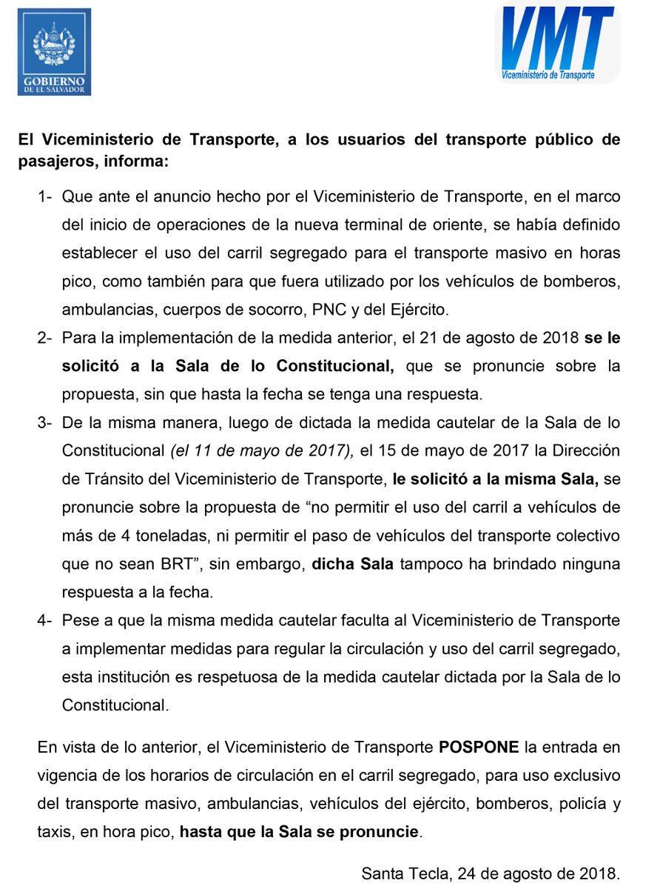

Noticia del dia
VMT suspende uso exclusivo de los carriles del Sitramss
El Viceministerio de Transporte (VMT) suspendio, hoy, las restricciones de circulacion en los carriles del Sitramss, las cuales entrarian en vigencia este sabado. La medida fue parte del plan general de
ordenamiento en el Area Metropolitana de San Salvador y en el marco del inicio de operaciones de la Terminal de oriente Plaza Amanecer que se encuentran en el kilometro 6 y medio del Bulevar del Ejercito.
El VMT establecio en el eje exclusivo de dos horarios, el primero es que circularia todo tipo de vehiculo, en ambos sentidos en el carril segregado del Sitramss, con excepcion del transporte colectivo que no pertenezca al
sistema masivo del Area Metropolitana de San Salvador y el transporte de carga que supere las 4 toneladas, en los horarios comprendidos de 8 de la mañana y las 4:30 de la tarde, y entre las 7:30 de la tarde hasta las 4:30
de la mañana.
El otro horario que estipulo el VMT fue el de 4:30 de la mañana a 8 de la mañana, y de 4:30 de la tarde hasta las 7:30 de la tarde, que seria solo para las unidades del Sitramss en el eje exclusivo. El viceministerio tambien informo que las medidas que pretendio implementar
este dia se las habia pedido a la Sala de lo Constitucional que se pronunciara. De acuerdo con la institucion, le hicieron dos solicitudes: el 11 de Mayo de 2017, sin que la máxima instancia se pronunciara.
La media cautelar indica que se deben tomar las medidas para mejorar el trafico, entonces la medida se toma a partir de que habran muchos buses que ya no circulara en el Bulevar del Ejercito, eso mejorara el trafico y repercutira
positivamente en los particulares, indico García.
